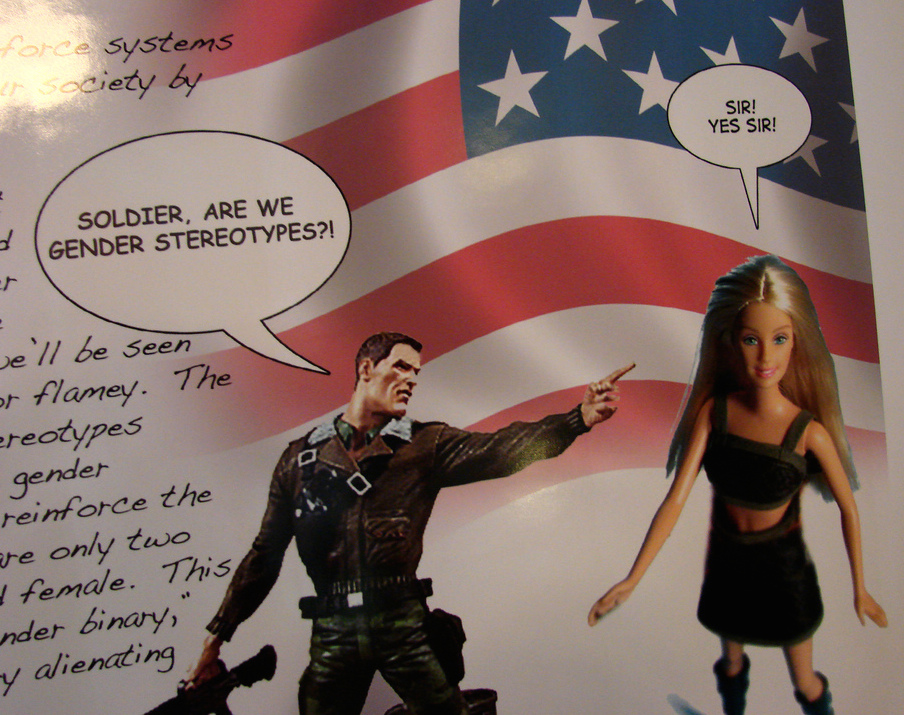

Triangles are my favorite shape. Three points where two lines meet.
Toe to toe, back to back, let's go, my love, it's very late.
STEREOTYPE THREAT
"When you feel under threat, you know that based on an identity you have, something bad could happen. You don't know whether in fact it will happen. You don't know precisely what could happen or when or where it could happen.. It's like having a snake loose in the house. It's a terrible feeling. When you are in this situation, most of your cognitive resources are devoted to vigilance."-Dr Claude M. Steele.
I'm going to break myself up into itty bitty pieces for the purpose of this exercise.
In no particular order: I'm a girl. I'm 50% chinese, 25% cook island, 25% european. Jewish by title, aetheist by practice. No strong political following. Married to a (wonderful) Australian. I'm a (youngish) mum. Dabblng in software development. Background is in corporate commercial leasing. From Wellington, NZ. I like dogs and food and being healthy, making things look pretty and colour coordinating our living room. A girly girl. You'd probably be right if you were to guess that I've experienced stereotype threat in my lifetime, and actually now that I've been forced to think about this for the purposes of this blog, I think I actually have too!
So what does stereotype threat mean to me? When have I felt it and how did it affect my achievement?
My understanding of stereotype threat is a condition when one is hindered or held back as a result of feeling negatively stereotyped. To give a couple of demographic examples that spawned research in this area and drawn by Dr. Clause M. Steele (father figure in the field):
- Black american students and the relationship of stereotype threat to academic performance
- Stereotype threat of gay men in childcare
- Whites and women in athletics stereotype threat
- The elderly in memory performance stereotype threat
- Stereotype threat of women and their driving skills/abilities
These seem like pretty pathetic and discriminatory generalizations - on the defense, just because you're old doesn't necessarily mean you can't remember anything, in fact you may have a super-duper memory that can recall the cost of every single supermarket item. But these generalisations are at the heart of stereotype threat. It is the fear of doing something that would inadvertently confirm that stereotype, which can result in diminishing one's confidence and intellectual ability and ultimately their performance, or what Steele draws out as inevitable underperformance (if the threat is heavily engrained). Research has shown that factors such as anxiety, physiological arousal, and reduced cognitive capacity, can all occur under stereotype threat, and each factor might contribute to lowered performance. To understand stereotype threat, is to understand diversity," according to Steele.
One incident I can recall was recently in Melbourne with a dear friend of mine, in a car, in a tight car park. We were in a rush trying to tick things off the list for the day before getting us to an airport. Said dear friend was clearly stressed and a potty-mouth-bomb exploded from his mouth when a neighbouring driver reversed outwards towards our car. "Bloody asian driver". Being that 50% of me is chinese I felt I was a "jerk-crap-driver" too. Has this changed my ability and confidence in driving? I don't really think so, but then again this was just a mild racist exchange from someone I knew and who I knew was just stressing over nothing, so for me it was harmless and a bit pathetic and more a reflection of my jerk friend rather than my genetic makeup. Having said this my reaction could be different in a totally different context. How did I combat this? Well I corrected/affirmed to said friend that not all asians are useless drivers and in fact that I myself, a driver of asian descent scored glowingly in my recent restricted licence. SO THERE! I've also really embraced my geek-chic glasses which are hardcore geeky and required for driving. So you could say that I really play up the stereotype, perhaps this is my unconscious way of dealing with stereotype threat.
There's a lot of discourse around the notion of "self-handicapping" and impact on career choice in stereotype threat. Self-handicapping is a defensive strategy where individuals erect barriers to performance that become justification for failure but then subsequently impact on one's future choice of career. Steele, for example, showed that women undergraduates in male-dominated disciplines reported higher levels of sex discrimination and stereotype threat, and these women were also more likely to report that they were thinking of changing their major compared with women in fields that were not dominated by men. Similarly, women math and science majors who viewed a discussion of math and science topics where males were numerically dominant showed lowered interest in participating in such a discussion in the future. It's a numbers game and it's seemingly pretty real.

In a former life I was a bit of an Ivana Trump. I now no longer spend 40% of my salary on power suits - I'm way way waaaay better off for this a billion percent and I really don't think I could venture back into corporate again. This is why my corporate friends just don't get it when I say "I'm doing a software development course. I'm going to be a software developer". It's like speaking gibberish to them. Perhaps the reaction is one of pity - "she's too far gone, there's no way we can bring her back to us." They think I've given up high heels in exchange for a waste of a life as a programmer. Aside from tackling such sad judgement from the corporate crew, I guess this affects me by opening the ugly boxes of "self-doubt" and "lack of confidence".
So yes, this does feed back into studies made by Steele and others in the field. However it's interesting and pretty cool to note that our class makeup is about 55% female to 45% male. A couple of others from our cohort are making major career changes also, so I know I'm not alone in this. I think it's a changing scene for IT and gender makeup and just like my example with the driving, I think I sub-consciously play up the stereotype. For example when I first got into Dev Academy I immediately celebrated by going out to buy a whole "new me wardrobe". This is how I cope. It seems to work.